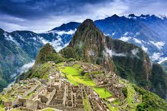

machu pichu

Machu Picchu (pronunciado /'en quechua, «monte viejo») es el nombre contemporáneo que se da a una llacta —antiguo poblado incaico andino— construida antes del siglo xv, ubicada en la Cordillera Oriental del sur del Perú, en la cadena montañosa de los Andes a 2430 metros sobre el nivel del mar